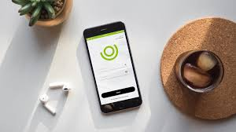

Home
Francisco Caro Diaz
desarrollador iOs y Android.
🚀 Ingeniero Informático con más de 13 años de experiencia en desarrollo de software, especializado en proyectos móviles. Apasionado del mundo mobile y comprometido con el aprendizaje continuo.
💼 En búsqueda activa de un nuevo desafío profesional emocionante donde pueda aplicar mi amplia experiencia y habilidades técnicas.
💡 Últimos Logros y Responsabilidades:
Lideré la implementación y mantenimiento de aplicaciones iOS y Android, así como la colaboración en AndroidTV.
Trabajé como Mobile team Leader en grupos pequeños y grandes proyectos.
Diseñé arquitecturas de soluciones de movilidad para iOS y Android.
Apliqué las mejores prácticas de codificación y pruebas para ofrecer aplicaciones iOS y Android de alta calidad.
Trabajé en un entorno ágil utilizando SCRUM para la gestión de proyectos.
Participé en la definición de servicios backend y web.
Revisé el código y los entregables del proyecto garantizando la máxima calidad.
Solucioné errores y problemas de rendimiento, asegurando un funcionamiento óptimo de las aplicaciones.
Mentoricé al equipo de desarrollo para impulsar el desarrollo de habilidades técnicas y el crecimiento del equipo.
Experiencia demostrada en desarrollo móvil nativo tanto en Android (Compose, Kotlin, Java) como en iOS (Swift, SwiftUI).
Trayectoria exitosa como líder de equipos móviles y desarrollador senior en diversas empresas, desde startups hasta corporaciones multinacionales como Atos y Airbus.
Capacidad comprobada para abordar proyectos complejos y variados, adaptándome a diferentes entornos y tecnologías.
Dominio del español, con habilidades comunicativas en inglés e italiano.
¡Estoy emocionado por explorar nuevas oportunidades y contribuir con mi experiencia y pasión al próximo proyecto emocionante!
Proyectos recientes

TVUp Media Telecom S.L
Líder Técnico de las apps iOS y Android, mi responsabilidad principal ha sido dirigir el desarrollo y mantenimiento de nuestra plataforma, colaborando estrechamente con el equipo de AndroidTV. Desde el inicio, he liderado la planificación y ejecución de proyectos, asegurando la entrega oportuna y de alta calidad de nuestras aplicaciones.\n
Estoy involucrado en todas estas fases, desde la investigación inicial y la definición de requisitos hasta el diseño, implementación, pruebas y despliegue.\n
Esto ha requerido un profundo análisis de los requisitos del usuario, así como la evaluación de las tecnologías y herramientas más adecuadas para cumplir con esos requisitos. Una vez definidas las especificaciones, he liderado equipos multidisciplinarios en el desarrollo de soluciones innovadoras y efectivas.\n
También he sido responsable del mantenimiento continuo de las apps. Implica la identificación y corrección de errores, la optimización del rendimiento y la actualización de las versiones para garantizar la compatibilidad con los últimos dispositivos y sistemas operativos.\n
Un área en la que he desarrollado experiencia significativa es en la implementación de reproductores de medios. Nuestras aplicaciones están diseñadas para ofrecer una experiencia multimedia excepcional, y para lograr esto, hemos integrado ExoPlayer y ShakaPlayer. \n
Desarrollo en Kotlin, Jetpack, Compose y Swift y SwiftUI. ExoPlayer, ShakaPlayer, Widevine, Firebase, Base de Datos Realm y Room, Dagger. Flavors, Build Types Targets Diferentes, Gestión de Configuraciones. Pruebas y Depuración, con JUnit y Mockito. Pruebas Unitarias en Swift con XCTest. Desarrollo de Suites de Pruebas: Mocking y Stubbing. Integración con Plataformas de Inicio de Sesión Externas: Google y Amazon. Deep Links, Notificaciones Push, Transmisión a Dispositivos Cast, Automatización de Implementación con Fastlane, Herramientas de CI/CD, Pipelines en Bitbucket.

Orquest
Responsable del desarrollo de la nueva versión para iOs y Android de la aplicación móvil de Orquest. Realicé el trabajo de varios perfiles estuve encargado de diferentes tareas: análisis, desarrollo, testing y publicación en el market. Proyecto desarrollado con uso de la arquitectura MVVM usando como lenguajes Kotlin y Swift. Responsable técnico en el inicio y desarrollo del proyecto móvil partiendo de una versión previa desarrollada con framework híbrido Ionic, enfocado en cómo mejorar la usabilidad y experiencia de usuario respecto a la antigua aplicación y mejorar con nuevas funcionalidades con la mejor calidad para ambas plataformas.

SDOS
Responsable técnico desarrollo proyectos con tecnología iOs y Android. Lider técnico en la entrega y desarrollo plataforma móvil de la aplicación DIA. Responsable en la aplicación móvil de las mejores prácticas de análisis, codificación, testing y entregables. Participante activo en proyectos con metodología ágil Scrum. Participo también en la definición de parte servidor y servicios web para dar un mejor rendimiento al producto. Participo al igual en el análisis, estimaciones y desarrollo de proyectos propios y de terceros. Mentor de los equipos iOs y Android en orden de asegurar el continuo desarrollo del equipo en las mejores técnicas a implementar, encargado del continuo crecimiento técnico del equipo.

Auroralabs
Responsable desarrollo de nuevos proyectos de Android y iOS y también a cargo de mantener y evolucionar aplicaciones de proveedores. Continuamente centrado en cómo mejorar la usabilidad y la experiencia del producto móvil y mantener la mejor estructura del código fuente para aprovechar las nuevas características y desarrollos con la mejor calidad. .

Freelance
Participación en varios proyectos realizados con tecnología Android y iOs
Contacto
Por favor, no dude en ponerse en contacto conmigo si necesita más información sobre mi, sobre mi experiencia o proyectos en los que he participado.